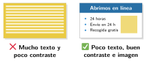

Diseñar una presentación
Criterios: 7a, 7c
🤔 Pienso10 min
Qué hago aquí: Piensa un momento y contesta con lo que ya sabes. No pasa nada si no lo sabes: es para empezar.
Piensa en una presentación aburrida que hayas visto. Escribe tres cosas que la hacían aburrida.
📖 Leo y aprendo40 min
Qué hago aquí: Lee despacio, mira los dibujos y los ejemplos, y quédate con la idea clave del final.
Una presentación es un conjunto de diapositivas que acompañan a una persona que habla. Las aplicaciones más usadas son PowerPoint (Microsoft 365), Canva, Prezi y Presentaciones de Google. La diapositiva apoya; quien comunica eres tú.
Antes de abrir el programa, planifica:
¿qué quiero conseguir?
¿a quién?
¿qué deben recordar?
inicio, desarrollo, cierre
1 diapositiva por minuto

✏️ Hago150 min
Qué hago aquí: Haz las actividades en orden. Empieza siempre por las básicas.
Señala qué está mal en cada caso: a) 14 líneas de texto en Times de 14 puntos; b) letra amarilla sobre fondo blanco; c) seis fuentes distintas; d) una foto pixelada de internet.
Planifica una presentación de 5 minutos sobre tu ciclo para alumnos de 4.º de ESO: objetivo, público, mensaje principal y guion de 5 diapositivas.
Reduce este texto a una diapositiva con la regla del 6 × 6: La Papelería Sena, que lleva treinta años en Astillero, va a abrir en febrero una tienda en línea desde la que los clientes podrán comprar las 24 horas, recibir el pedido al día siguiente o recogerlo en la tienda sin gastos de envío.
Elige con Coolors (coolors.co) una paleta de tres colores para tu empresa del trabajo final y dos fuentes (títulos y texto). Justifica la elección según tu público.
Busca una presentación pública de una empresa y analízala con las normas de diseño: ¿qué cumple y qué no?
🚀 Amplío (si quieres saber más)
Qué hago aquí: ¿Has terminado? Lee la curiosidad o elige el reto. Es voluntario.
Investiga qué colores transmiten confianza, energía o calma y qué empresas los usan. ¿Por qué tantos bancos usan el azul?
✅ Compruebo10 min
Qué hago aquí: Contesta sin mirar la ficha y marca cómo lo llevas.